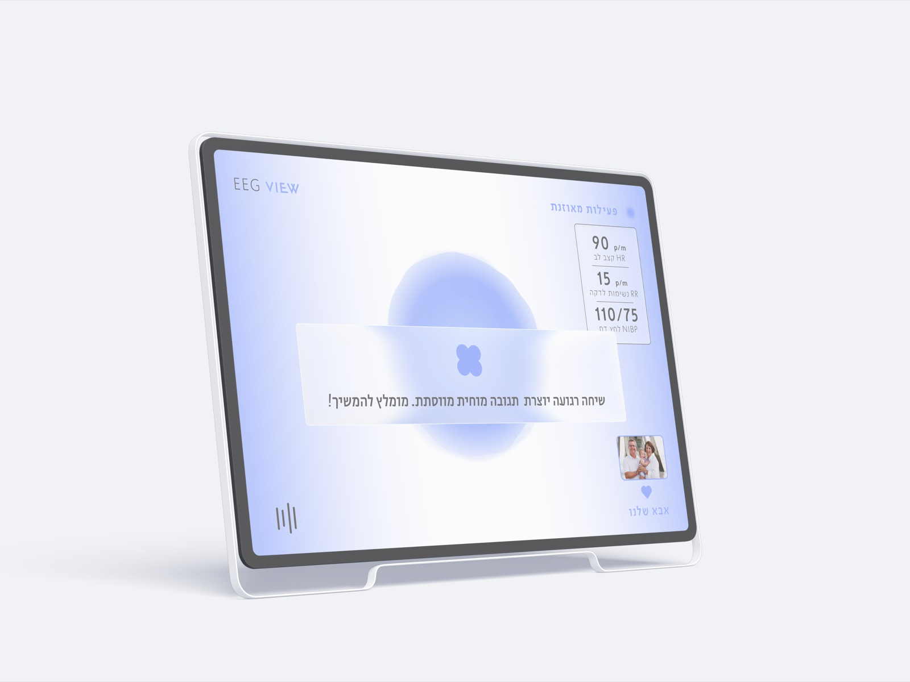
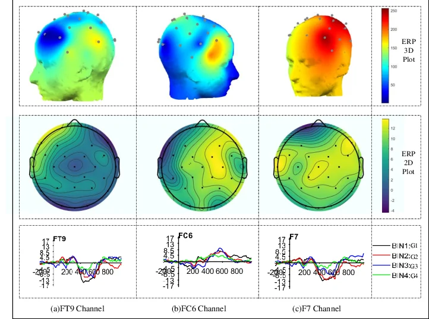
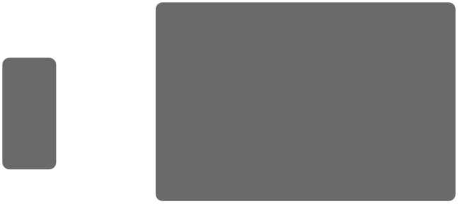
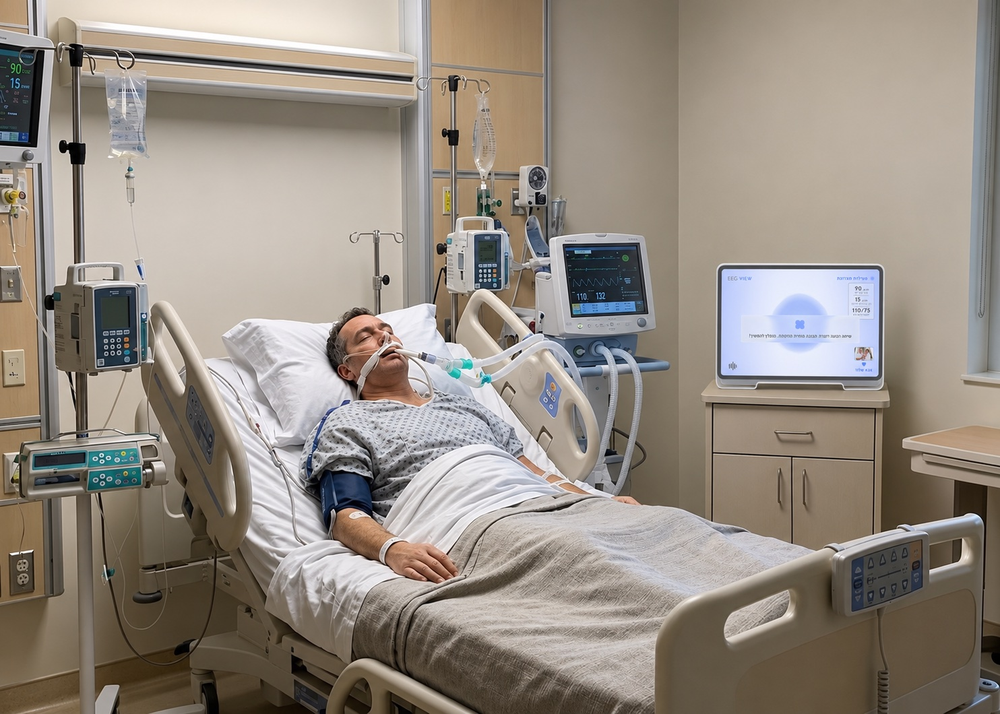
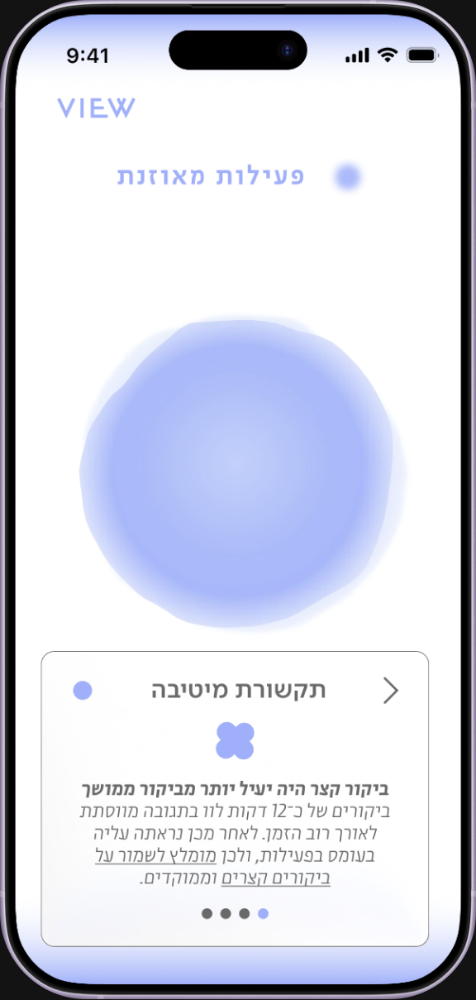
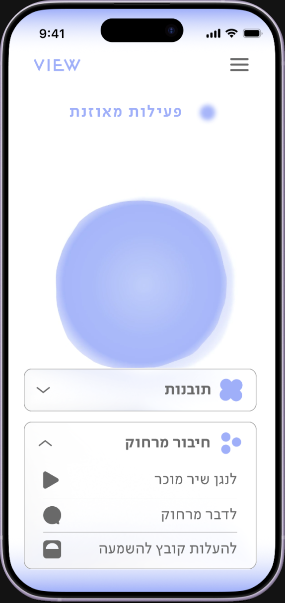
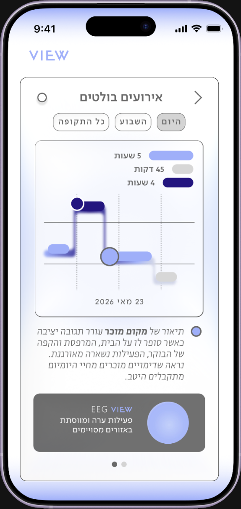
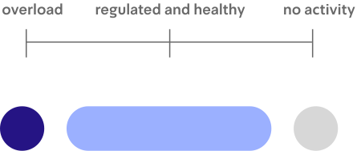
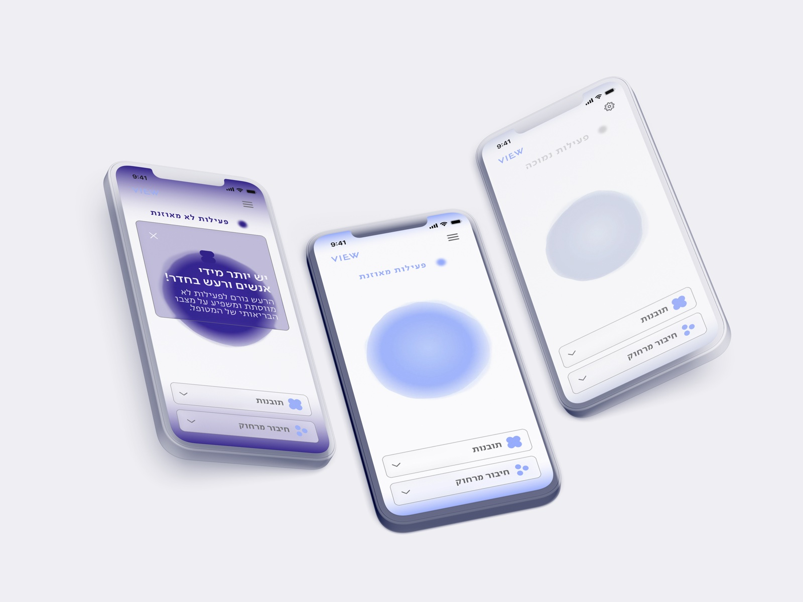
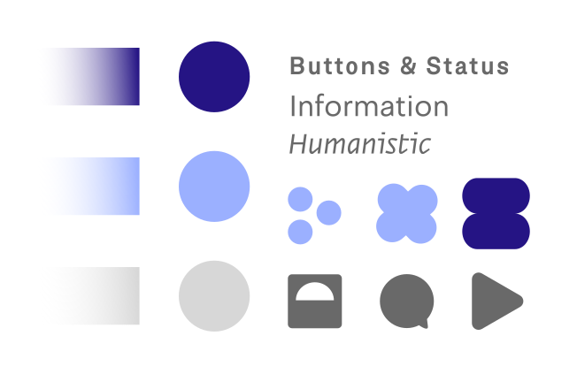

VIEW
BACKGROUND1/5
An AI-based system that translates the brain activity of coma patients into a humane visual language
VIEW is a speculative system designed to help families communicate with loved ones in a medically induced coma. By combining EEG (brain activity mapping technology) data with AI, the system translates brain activity into simple visual feedback, helping families better understand the patient's state and maintain a connection over time.
The project began with a shared personal experience. Both of us had stood beside a loved one in a medically induced coma, unable to communicate or know whether our presence made a difference. Although medical staff encourage families to talk, share memories, and play familiar voices, the absence of any visible response can make maintaining that connection difficult.
Developed within UX/UI Lab, Bezalel Academy.
Collaboration with Ghadir Salman.
The poster for the event “industrial peace”.

Through interviews with people who had experienced similar situations and research into EEG and coma patients, we explored how brain activity might offer families a different form of feedback.
Our research suggested that a lack of physical response does not necessarily mean a lack of awareness. Studies such as FAST (Familiar Voice Stimulation) highlight the potential influence of familiar voices and personal memories on patient’s neurological responses.
EEG Readings.
Color-coded visualization highlighting active and inactive areas of the brain.

The system combines EEG readings with information about what is happening in the room, using AI to provide families with real-time feedback.
A bedside monitor presents the patient's state, helps interpret the readings, and suggests ways to interact. A companion mobile app allows family members to connect remotely, follow changes over time, and speak to the patient even when they cannot be physically present.

The bedside monitor.

Insights and instructions.

Remote visit control.

The activity tab.

The bedside monitor displays balanced brain activity, suggesting that the current interaction may be stimulating a positive response and encouraging the family to continue.
One of the main challenges was creating a visual language that could communicate complex neurological data without implying more than it can reveal. EEG cannot tell us what a patient feels, but it can indicate patterns of brain activity.
We translated these patterns into three simplified states:
- No Activity An invitation to engage through conversation, touch, music, or familiar memories.
- Regulated Activity Indicates a balanced level of brain activity during the interaction.
- Overload Suggests excessive stimulation and encourages a calmer environment.
This system aims to provide families with practical guidance while avoiding false interpretations or expectations.

The three states - mobile indications.

The bedside monitor indicates excessive brain activity, potentially caused by the presence of too many people in the room, and recommends reducing stimulation to avoid overwhelming the patient.
The bedside monitor displays low brain activity, encouraging family members and visitors to interact with the patient to help stimulate brain activity.
The visual identity was designed to feel calm and approachable within a clinical environment. A palette of three tones, represents the different states of brain activity.
Soft shapes evoke breathing and subtle movement, while The Basics and Simpler Pro typefaces maintain clarity and accessibility, and EditorSans to add a humanistic tone throughout the interface.
The poster for the event “industrial peace”.

F00TBALL